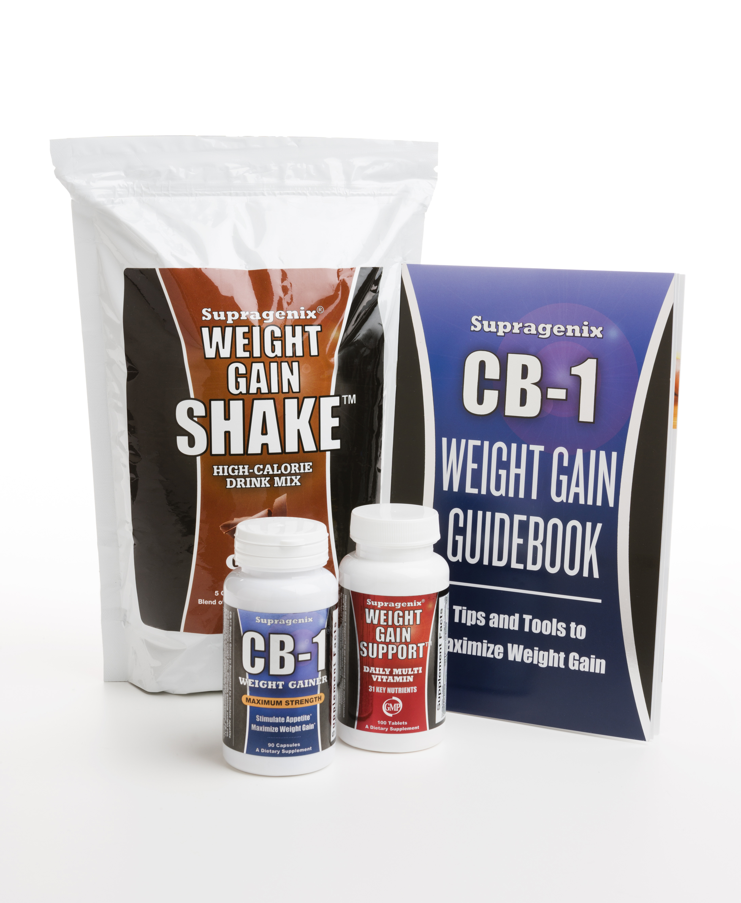
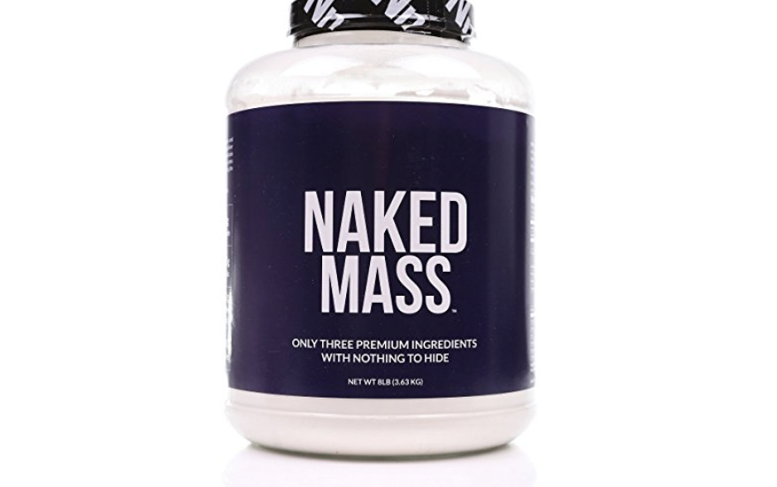
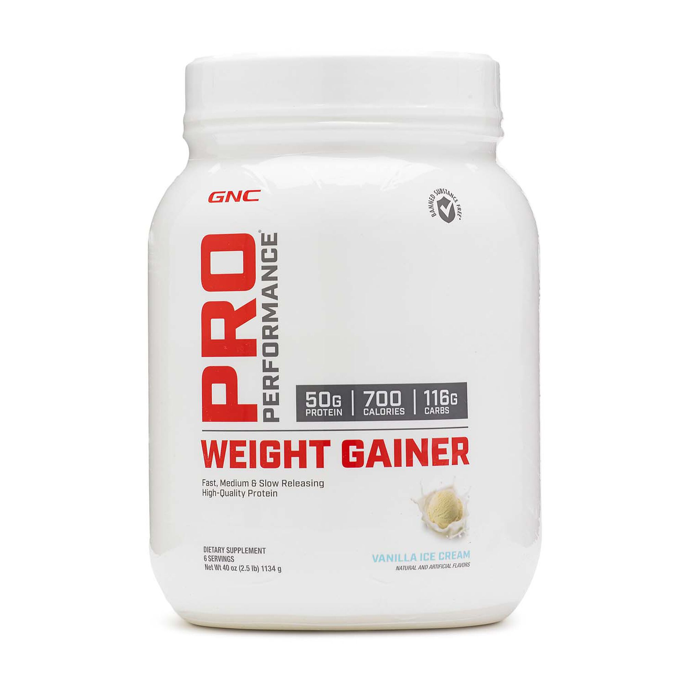
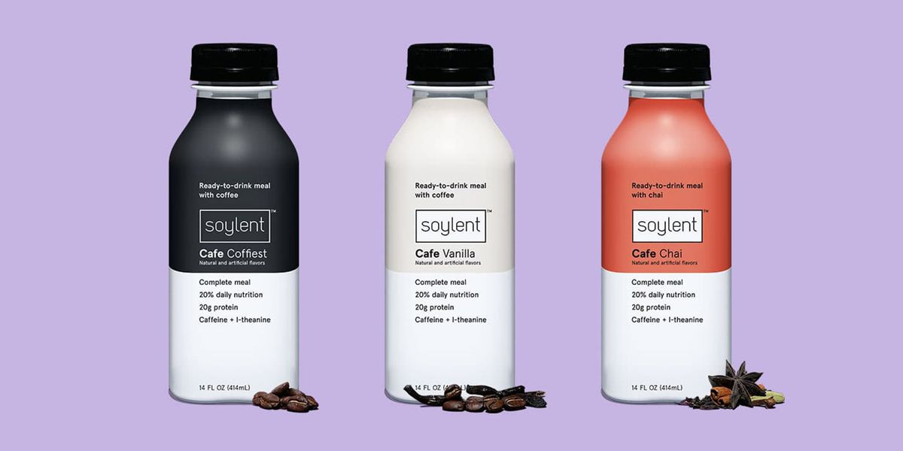
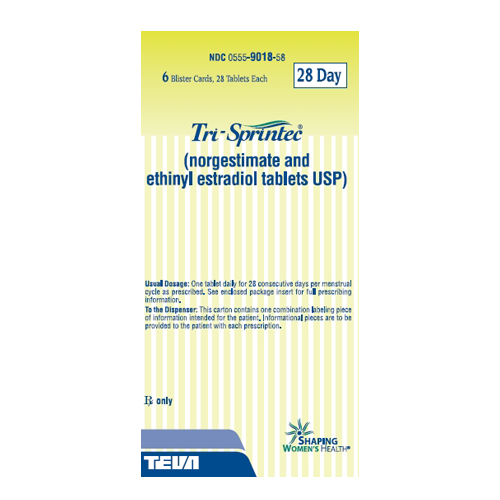
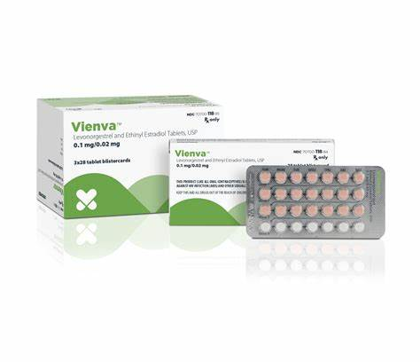

Introduction
If you're more worried about being at a healthy weight, these supplements are for you.
The Supplments/Pills:
Below are the recommended supplements that works best for people with a BMI of below 16.5 & 18.5, and between 18.5-24.9
1. CB-1

The "CB-1" supplment was put to the test in an 8-week randomized, controlled clinical trial. Results show CB-1® users gain more weight on average than with diet alone.
The CB-1® Weight Gainer is a natural weight gain pill. CB-1® was designed for people who struggle to put on weight and suffer from a fast metabolism or weak appetite.
2. Naked Mass

The "Naked Mass" is a 2nd top pick because it is high in calories, has minimal ingredients, and is Informed Choice certified.
If you're someone that's considered a “hard-gainer”, it can be quite a challenge for you to eat a surplus of calories to gain weight. Naked Mass contains 1250 calories and 252 grams of complex carbs in each serving, making it much easier for you to get the additional calories you need.
3. GNC Pro Performance

The "Pro Performance" comes in different flavors!
GNC Pro Performance Weight Gainer is a supplement designed to help gain weight and build muscle mass. It contains a well-balanced blend of 2200 calories, 73g protein, and 440g carbs. The formula includes naturally occurring branched-chain amino acids (BCAA) to help reduce muscle breakdown during exercise, added medium-chain triglycerides (MCT) for energy, and a dual carbohydrate system to preserve and replenish energy stores.
4. Soylent

The "Soylent's Creamy Chocolate Meal Replacement Shake" is an easy-to-drink, calorie-dense option to help people gain weight especially if they do not want animal-based ingredients.
Soylent's Creamy Chocolate Meal Replacement Shake can be a convenient weight gain supplement especially if you are looking for something plant-based. The 20 grams of protein come from soy protein isolate—a vegan protein containing all nine essential amino acids. Not only does it have a well-rounded amount of fat, carbs, and protein, but it is a good source of many vitamins and minerals including iron, calcium, and zinc. It also provides three grams of fiber per serving.
The 400 calorie bottle can easily be drunk with meals or throughout the day as a snack to boost your daily calorie intake.
Outro
If you're more worried about getting pregnant, these 2 Oral Contreceptive pills are recommended for people with a BMI of below 16.5 & 18.5, and between 18.5-24.9. (Must BE Taken DAILY)
1. Tri-Sprintec

Norgestimate, ethinyl estradiol
Tri-Sprintec is a type of combined oral contraceptive (COC), or birth control, that's taken by mouth every day to prevent pregnancy. It contains two types of hormones, ethinyl estradiol and norgestimate, and when taken properly, prevents pregnancy by stopping a woman's egg from fully developing each month. Tri-Sprintec is a triphasic birth control, meaning it has three different phases of hormones that tries to mimic the rise and fall of hormones in the menstrual cycle
2. Veinva

Levonorgestrel and ethinyl estradiol
Vienva is a combined hormonal birth control pill used as contraception to prevent pregnancy. It contains two hormones: ethinyl estradiol (an estrogen) and levonorgestrel (a progestin). Here’s how Vienva works:
Suppressing ovulation: It prevents the release of an egg from the ovary.
Changing cervical mucus: This alteration blocks sperm movement.
Creating an unfriendly environment for the fertilized egg: The lining in the uterus (womb) is modified, making it less suitable for implantation.
Dosage: Take one white tablet daily for 21 consecutive days, followed by one peach-colored inert tablet daily for 7 consecutive days according to the prescribed schedule. It’s essential to take Vienva at the same time each day for maximum contraceptive effectiveness